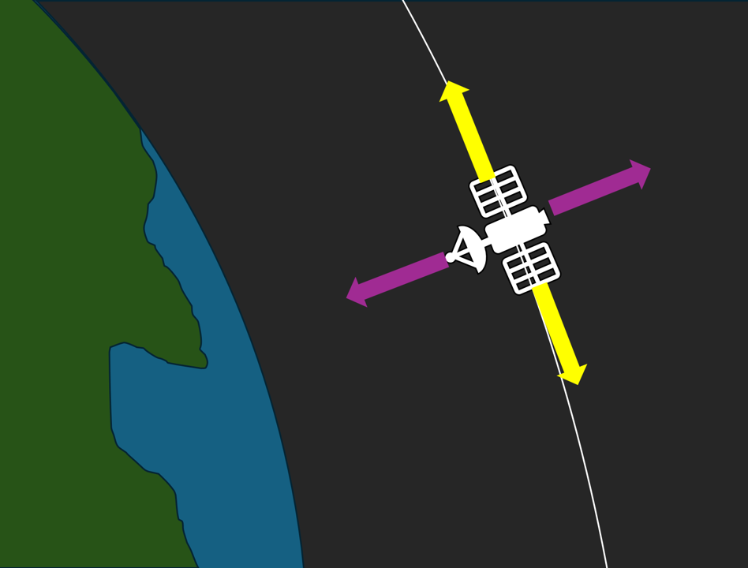

I built a 2D planar orbit simulator that estimates spacecraft state from noisy, intermittent ground-station measurements using an Extended Kalman Filter (EKF), then uses an LQR state-feedback controller (with a fixed acceleration limit) to mitigate injected disturbances. I evaluated the filter using Monte Carlo NEES/NIS consistency checks and monitored controller effort and saturation.
This project combines orbit determination and feedback control in one loop. I kept the physics intentionally simple (planar two-body gravity) so the work stays focused on measurement availability, noise assumptions, and estimator consistency checks.
[X, Ẋ, Y, Ẏ] using noisy ground-station range, range-rate, and angle measurements.
When multiple stations are visible, stack measurements and use a block-diagonal R.
u = −Kx̂ with saturation.
Initialize weights with Bryson’s rule and tune the response/effort trade.
EKF with nonlinear propagation (ode45), Jacobians evaluated at the current estimate, covariance propagation with acceleration-process noise,
stacked measurement updates, and a measurement dimension that changes with station visibility.
LQR designed about a nominal circular orbit, including a state-space model, gain synthesis, weight selection via Bryson’s rule, and saturation to a fixed maximum acceleration used in this demo.
Separate truth vs. filter-assumed noise, time-varying station visibility, Monte Carlo trials, and instrumentation to inspect errors, innovations, and control saturation.
The truth model propagates nonlinear two-body dynamics and injects disturbances as additive acceleration noise. I use the same acceleration interface for both disturbances and actuation so I can compare truth inputs against what the EKF assumes.
In the estimation study, the truth trajectory is propagated with ode45 and sampled at a fixed update period for EKF updates.
Each visible station returns range ρ, range-rate ρ̇, and angle ϕ.
Visibility changes over time, so the measurement dimension changes too. When no stations are visible, the filter runs prediction-only and uncertainty grows; when measurements return, the filter tightens again.

Propagate the nonlinear state estimate forward with the dynamics. Evaluate the dynamics Jacobian at the most recent corrected estimate.
Propagate covariance with the discrete transition and an acceleration-noise mapping. Use NEES/NIS behavior over Monte Carlo trials to guide noise tuning.
Stack measurements from all visible stations, build a block-diagonal R, and apply the standard EKF update.
Stacking: if m stations are visible, the measurement vector is 3m×1. The indexing/order needs to stay consistent across y, H, and R.
Linearization: If your Jacobians don’t match what you propagate, the EKF gets unreliable fast. I evaluate Jacobians at the corrected estimate each step.
Dropouts: Visibility gaps aren’t an edge case — they’re normal. During gaps, uncertainty grows; after gaps, measurements pull the estimate back in.
Noise assumptions: I keep separate truth vs. filter-assumed noise so I can test mismatch and see how NEES/NIS changes.
The controller is designed by linearizing about a nominal circular orbit of radius r₀.
I express the state as small in-plane perturbations and design a two-axis control input.
With mean motion n = sqrt(μ / r₀³), one common form of the in-plane linearization is:
LQR minimizes state deviation and control effort and returns a stabilizing gain K:
I initialize Q and R with Bryson’s rule and tune the overall trade with a scalar multiplier.
The commanded acceleration is saturated to a fixed limit used for this demo (0.01 g).
I compare designs using time response and integrated control effort under the same acceleration limit. Saturation matters: once the limiter engages, performance is constrained by available acceleration rather than feedback gain.
I evaluate filter consistency using NEES (state error) and NIS (innovation) and compare them to χ² bounds. These checks help diagnose under/overconfident covariance tuning across many trials.
I randomize the initial truth state around the filter’s initial estimate using the initial covariance and run repeated trials. This exposes failure modes that a single run can hide.
The controller command is saturated to a fixed acceleration capability (0.01 g in this demo). This is a simplification — it’s a clean way to compare controllers without implying a flight-realistic thruster model.
This project page documents a coupled estimation + control loop with time-varying measurement availability. The algorithms were developed in MATLAB; this site presents the results and links to the supporting materials.
The current demo applies continuous acceleration, which is convenient for control comparison but not representative of many real spacecraft thrusters. A flight-like actuation layer would convert commands to discrete firings (with minimum impulse bit) and track propellant/ΔV. It would also benefit from deadband logic to avoid “chasing” estimator noise.
LQR is a clean baseline, but it does not enforce operational constraints beyond saturation. For realistic operations, you’d likely add an outer layer that explicitly trades performance against ΔV/propellant and handles constraints directly.
Orbit determination with nonlinear filtering, station geometry, stacked measurement updates, and NEES/NIS testing.
Linearized orbital perturbation model, LQR synthesis and tuning, and performance comparison against a manual controller.
If you want to talk GN&C, estimation, or simulation infrastructure, I’m happy to chat.